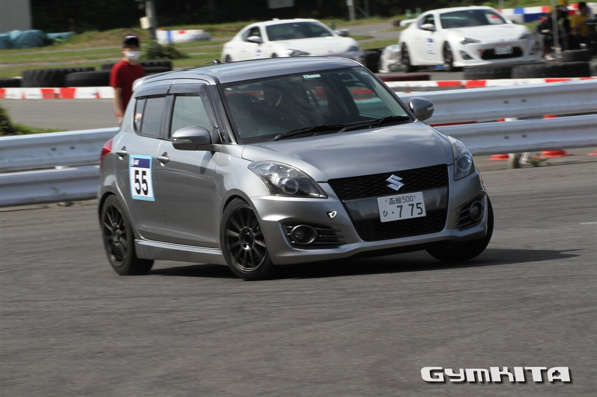
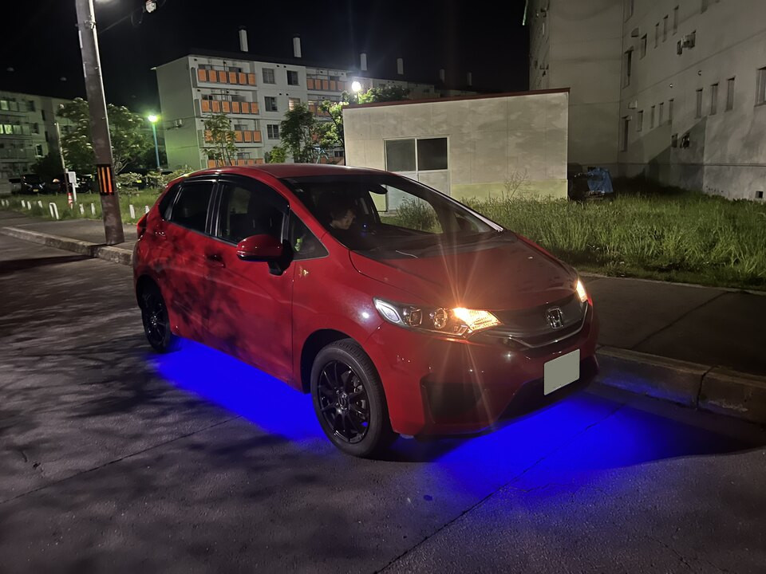

ここでは、弊部のゆかいな仲間たちを紹介する。
M2 #
ばっさー #

弊部にしては珍しく、速いのにストレートでM2まで進級している優等生。部長を2年連続でやっていたことがある。
愛車はZC32Sと、軽耐久出場経験もあるおもちゃのエッセ。北斗市出身。
あわ #
たぶん弊部で一番情報系大学生をやっている。研究がいそがしいのか最近見ないが、冬になるとよく見る気がする。
愛車はNBロスタと、ジムニー。富良野市出身。
B4 #
さの #
北大自動車部兼未来大自動車部。新歓ドライブでは1年生を横に乗せ、愛車のGTOの加速で「わからせ」ていた。
愛車は神のGTOとムーヴ。京都府出身。
B3 #
↑♯ #

ハンギョドンが大好き。自他共に認める自動車部一の巨乳。最近は将棋にハマっているらしい。地区戦ではR-Ecoでチャンピョン経験ありの実力者。
愛車は非常にうるさいNCP91ヴィッツ。兵庫出身。
ニック #
弊Wikiをつくった。広報の中の人兼、異常おたく担当。春夏秋冬毎秒雪乞いをしている割にはスタッドレスの溝はない。
愛車はGD3フィット、最近あまり触っていないLet’s4(原チャ)。札幌市出身。
NATO #
プリウスを愛している好青年。と見せかけてムッツリスケベな一面もある。
愛車は30系プリウス。キャリパーが赤い。(本人曰く「塗られた」) 埼玉県出身。
ロンダートさいとう #

わりと最近に入部して、車にアンダーネオンを付けたいという念願を達成した。家にハンコンがあるらしい。
愛車はGK2フィット。ハコジム初参戦にして好タイムを残していた。(中の人談) 岐阜県出身。
B2 #
つっちー #
現部長。ランクス大好きおじさん。2ZZに取り憑かれている。入部直後にランクスを買って破壊し、今度はOBからランクスを買ってきた。
愛車はちょっとうるさいカローラランクス。 札幌市出身。
おき #
現会計代理。ジムニーに乗るためにはるばる北海道まで来たが、あれやこれやといううちにミラを買い、エンジン載せ替えをしてしまった。
愛車はL275ミラ。東京都出身。
セナ #
イケメン担当。免許を取るためにバイトを奮闘中とのこと。
乗りたい車はRX-7(FD)。頑張ってほしい。札幌市出身。